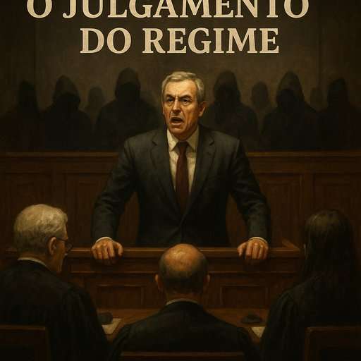

Publicado em 2025-07-08 22:36:17
O país inteiro finge que José Sócrates está a ser julgado.
Mas na verdade, é o regime que ali devia estar sentado.
O ex-primeiro-ministro é apenas o rosto —
o eco de um sistema político que só funciona com favores, conivência e impunidade.
Mas não escreveu o guião sozinho.
O povo assiste.
Com raiva cansada.
Com descrença crónica.
Porque percebe que não é Sócrates que está sozinho — é o povo.
Sozinho na espera, no sofrimento, na justiça que tarda, na vergonha que se repete.
Sócrates teatraliza, sim.
Mas não o faz em vão.
Sabe que há muitos a quem a sua queda arrastaria.
Por isso grita, insulta juízes, desafia procuradores —
porque não é apenas ele que teme a condenação.
O que se julga hoje não é um ex-governante.
É o modelo de poder que o criou.
É a teia de silêncios, de promoções cruzadas, de contratos escondidos e de cumplicidades institucionais.
Se Sócrates cair sozinho,
o regime sobrevive.
Se cair tudo com ele,
talvez nasça finalmente uma democracia digna desse nome.
Francisco Gonçalves
Escritor de crónicas contra os bastidores de um país que finge que se julga a verdade — mas protege o teatro da mentira.
Sócrates é apenas o reflexo obsceno de uma elite inteira — cúmplice, bem-falante, engravatada e voraz.
Ele é o boneco que fala.
Mas por trás dele está a mão invisível de um regime inteiro que se serviu do Estado como se fosse herança de família.
Eles viram.
Eles assinaram.
Eles receberam.
Eles calaram.
E hoje… continuam nos mesmos lugares.
Nos conselhos de administração, nas universidades, nas fundações, nos partidos e nas televisões.
Sócrates, com a sua arrogância teatral e retórica de mártir insultado, distrai a multidão.
Mas quem olha com olhos abertos sabe:
Não foi ele que saqueou o país. Foi um sistema. Ele só o representou com talento.